天猫养车案例解析项目背景：天猫养车诞生于 2019 年，是阿里集团旗下养车连锁品牌，为车主提供保养、美容、洗车、维修等一站式社区服务。2019 年 12 月，天猫养车第一家门店开业， 2020 年 3 月正式启动对外加盟招商。 2021年 7 月与华与华合作，核心诉求是“希望华与华以外部视角，给天猫养车（品牌话语）一个笃定的决策”。通过梳理天猫养车广告语我们发现，不到 2 年时间天猫养车品牌话语历经 3 次调整。品牌话语的变化只是表象，反映的是找不到战略抓手，“战略失焦，心不定”。
1价值观的胜利产业链核心企业的透明经营推动行业进步营销的两种价值观华与华讲营销的价值观有两种：一是利用信息不对称，消费者不需要真相，也不懂得产品科学，我只需要占领他的心智，蒙住他的眼睛，牵着他的手，让他选择我。二是让信息对称，假如信息对称，假如消费者是专家，懂得产品和服务的一切真相，他就一定会选择我！华与华历来推崇第二种营销价值观，不懈的推动信息对称，因为在信息对称的情况下，必定会有最好的产品和服务。所以营销的本质是一种服务，给顾客的信息和咨询服务，它的背后是价值观。
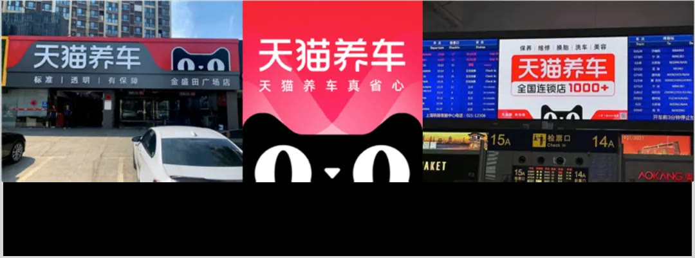
真正读懂天猫养车，重构养车产业价值链华与华认为，企业是社会的器官，是为解决某一社会问题而存在的。企业战略不是企业的战略，而是企业为解决某一社会问题，为社会制定的战略。企业社会责任不是企业的义务，而是企业的业务。而对天猫养车来说，不仅有企业社会责任，还有核心企业的产业社会责任。就是在一个产业链里，一个核心企业，作为上下游的组织者，共同为消费者提供服务。既要服务于消费者，也要服务上下游企业，为上下游提供咨询服务。一切从社会问题出发，我们发现，养车行业最大的社会问题就是“信息不对称”。
- 上游——整车厂技术垄断整车厂就是汽车生产商，处于整个养车产业链的上游，汽后市场核心三要素：车辆、技术、配件，在新车 3 年质保期内基本都掌握在 4S 店手中， 4S 店领先社会性门店 3 年的时间差，新车型出现维修问题，社会性门店要 3 年后才会接触到。
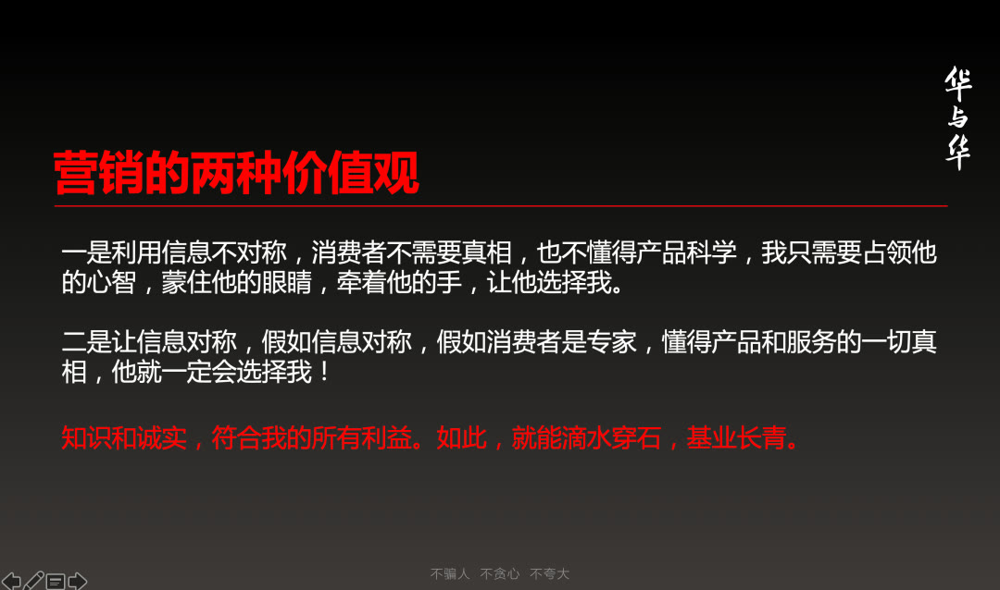
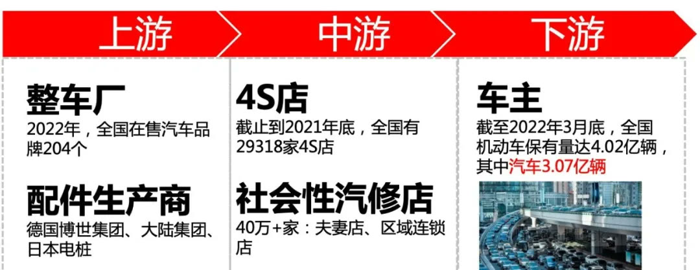
在技术难度上， 4S 店是专店专修，社会性门店要汇集万国车的修理方案及配件难度极大，据数据表明国内有上千款车型、相应的配件达数十万之多，对技术的要求和配件的要求是呈指数递增的。
- 中游——社会门店难突破技术壁垒，人才培养慢、服务不稳定很多养车店还在延续传统的经营模式，主要依靠老师傅的经验积累，在技师培养上，起码需要 3 - 5 年的培养，面对修“万国车”的需求，门店技师只能死记硬背、不断练习、花时间自己熟悉不同车型，技师成长慢，能力提升难，服务不稳定。
- 下游——中国车主的 4 个不知道，苦养车套路久矣！大部分中国车主车辆出现问题，主要依靠专业门店来处理。车主养车水有多深？消费者苦养车套路久矣！车主痛点可以总结为 4 个不知道：做之前不知道车子该做什么，做之中不知道技师在干什么，走之后不知道做没做、做了什么，不知道自己不知道。
天猫养车的事业就是解决“养车行业信息不对称”的社会问题。天猫养车用什么产品和服务来解决这个问题？通过对天猫养车经营活动分析，我们发现，天猫养车掌握了养车行业的两个核心命脉：一个是覆盖“万国车”的养车技术数据，一个是快速反应的供应链网络。上游：天猫养车 F6 智慧门店系统打破上游整车厂的技术垄断，实现技术信息对称天猫养车 F6 智慧门店系统掌握养车行业核心数据，能修万国车的技术数据和 1 . 7 亿车辆通用数据，拥有强大的技术团队和技术专家团，可以实现新车型上市一个月内完成全车系统的保养维修产品的匹配，甚至拍出视频确保一看就会。中游：提升门店 2 大效率--技师培养效率和配件配送效率
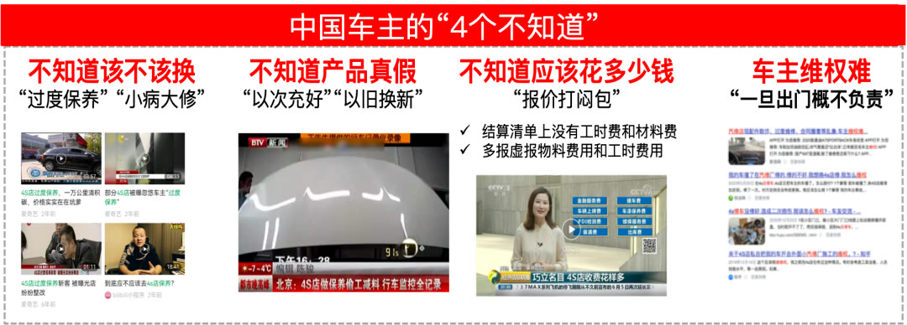
F6 智慧门店系统的所有车型及维修数据，天猫养车门店的员工在手机端可以直接使用，实现上万种车型与维保配件的自动适配，极大的降低了技术门槛，大大缩短了技师培养时间，提高了技师的培养效率和服务品质。
天猫养车的背后是康众汽配，直营自建了一个行业无出其右的仓储物流网络体系，拥有50 个中心仓、约 200 个城市仓和 1200 个前置仓，在全国除了西藏以外基本都覆盖，十万+的维保配件品类齐全，可以确保“ 5 公司 30 分钟”送到门店。
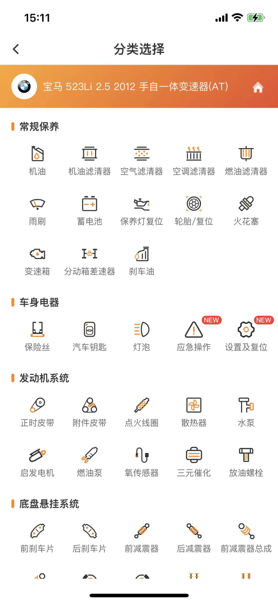
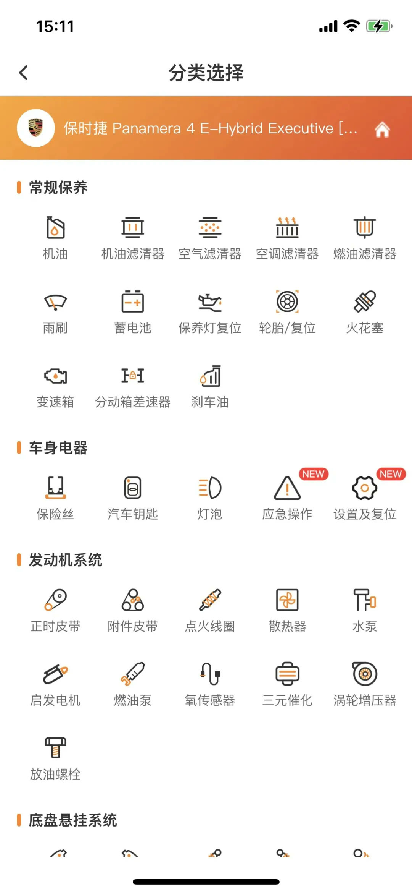
下游：天猫养车 APP 消灭了车主的 4 个不知道消费者在消费的时候追求的是信息的对称，觉得只要消灭了信息不对称性就敢消费，这是底层的消费逻辑。为此，天猫养车为车主专门推出了一个 APP ，它是车主手机上的养车管家，从车况体检、到配件价格、到服务过程，车主只要愿意全部可以看到，实现了全透明，对于消费者而言，扭转了传统养车场景下“ 4 个不知道”的被动局面。
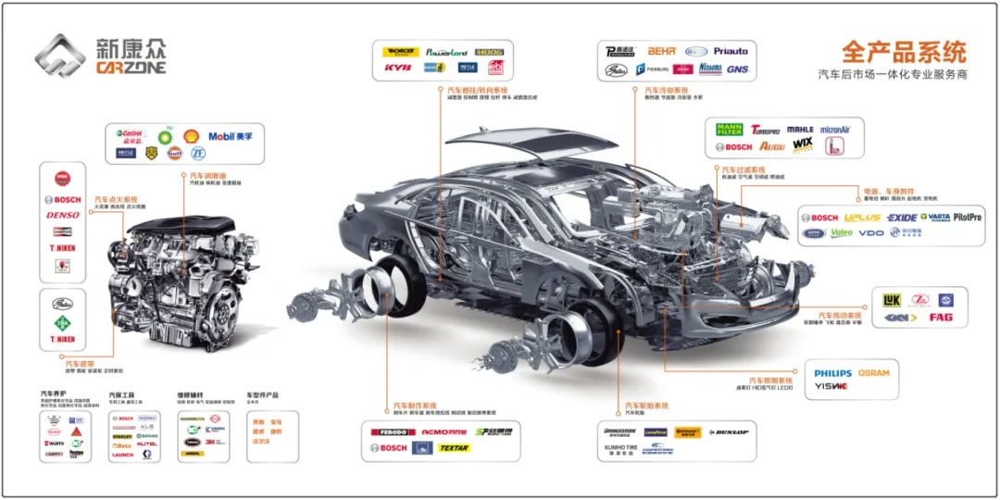
天猫养车重构养车产业价值链，致力于推动养车产业链的信息对称，实现企业透明经营。在一个产业链里面有一个核心企业，这个核心企业它是上下游的组织者，它组织上下游，然后共同为消费者提供这个服务。它既要服务于消费者，也要服务于上下游的企业。天猫养车就是一个这样的角色，他对加盟商提供技术咨询，对上游供应链提供信息反馈，组织上下游企业共同服务好车主，这是价值观的胜利！天猫养车用数字化能力重新构建了养车生态价值链，为上下游企业创造了独特的价值，实现总成本领先。天猫养车 3 年开店 1800 +家，二店率达到 1 / 3 。尤其是天猫养车联合运营中心模式，与区域连锁品牌进行深度合作，区域连锁品牌要想提质增效，数字化是必经之路，数字化投入一年几百万的成本高昂。
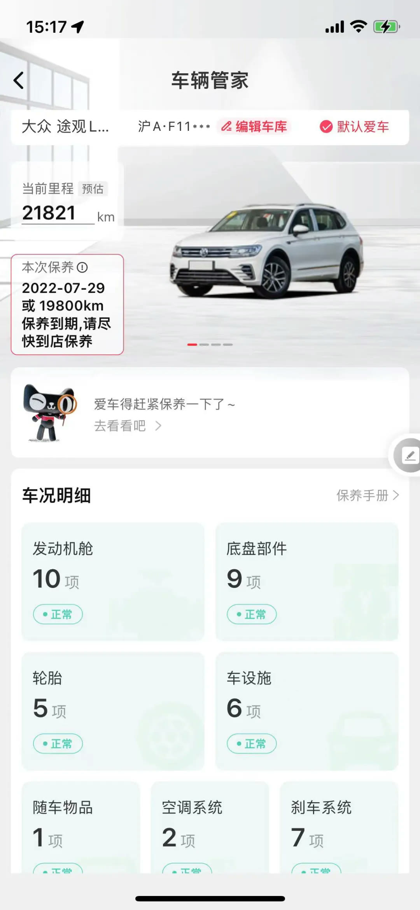
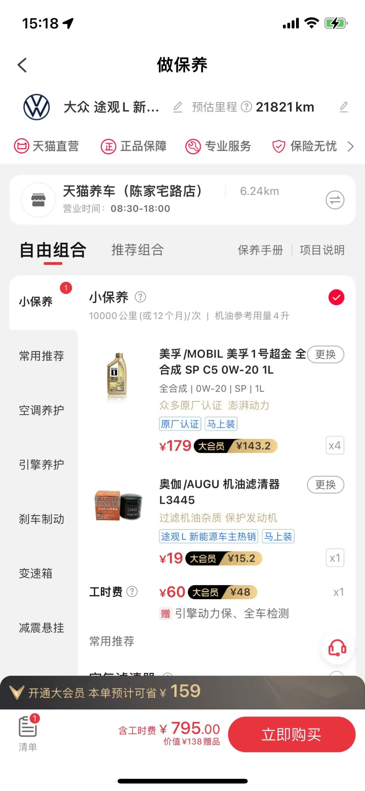
加盟天猫养车之后，共享天猫养车智慧供应链和智慧门店系统，一下子就省掉一年几百万的系统开发维护费用和人员成本，帮助传统区域连锁品牌实现降本增效，创造了持续性的成本优势；同时共享天猫养车品牌价值，带来更多年轻客群。 1 年多的时间就有 30个区域连锁品牌加盟天猫养车。一个品牌就是一套话语体系，用话语体系实现与车主的信息对称营销本身是一种服务，广告是给顾客的信息服务，帮助顾客做选择，其实就是给他提供服务。在天猫养车门店做保养，车主在天猫养车 APP 上可以一清二楚的看到车辆真实问题、相应的解决方案和报价、服务的全过程，实现信息的对称。
项目组在第一次接触到天猫养车 APP 这些智慧功能时很惊艳，现在养车店都这么先进了！后期在与门店沟通、车主访谈时发现它是在默默服务，并不为车主所熟知，需要重新梳理传播出去。经过与 APP 产品开发部门几轮学习和验证，重新命名 APP 上的 4 个核心功能，将晦涩的技术语言翻译成白话，并与车主价值直接关联：
- 产品信息对称： AI 适配。凭借天猫养车能修万国车的技术数据，只要输入车型，系统便可精准匹配合适的维保配件型号，而且车主在 APP 上都可以看到 —— 不必担心用错产品，伤害发动机。
- 价格信息对称： AI 报价。车辆过检后，系统会自动帮消费者匹配对应的服务项目和价格，全国门店线上线下一个价，消费者看到的就是实价，“价格全透明”—— 不怕虚高报价。
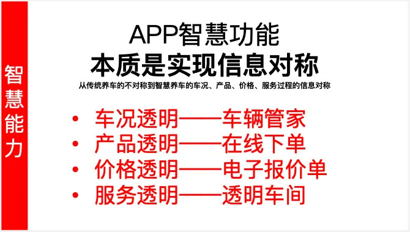
- 解决方案信息对称： AI +人工诊断。车辆进入天猫养车智慧门店后通过品牌、车型、里程等信息录入，系统便可自动为车辆进行全车体检，经过人工实车复核，精准诊断车辆隐患，并将车辆体检报告一键发送至车主手机 APP 上，哪些该做、哪些不该做一目了然，实现“车况全透明”—— 车主不必担心过度保养。
- 服务过程信息对称： AI 直播。车辆进入门店后，智能摄像即可自动识别车辆，追踪到施工工位，并可通过天猫养车 APP 将维保施工全过程直播推送给用户，实现“服务全透明”，且所有施工视频可在线保留 30 天，支持车主回看溯源，做到“售后有保障”。
天猫养车 APP 实现养车服务的全链路透明
产品的本质是购买理由，用购买理由封装体验产品——华与华产品开发在服务行业的实践华与华对产品的界定来源于菲利普·科特勒对产品的广义概念：产品是任何一种能被提供来满足市场欲望和需要的东西。包括有形物品、服务、体验、事件、人物、地点、财产、组织、信息和想法等。产品不止是物质的，还有服务和体验。我们把天猫养车抽象的智慧体验产品用购买理由封装，通过命名、改善、传播，把它变成了一个可以感知、可以传播的产品。通过对天猫养车智慧能力进行盘点，我们找到最有体感的智慧体验——天猫养车 APP 上的“透明车间”功能，很多车主和门店老板都有印象，但是大家对这个功能的描述众说纷纭，有的说透明车间、有的说施工直播、远程监控。“还可以远程监控的啊？”“现在都这么高级了吗？”“是比以前方便了不少。”事实上，天猫养车在这个功能上投入了很大的硬件成本和技术成本。首先在硬件投入上，智能摄像设备基本跟工位实现 1 对 1 ，成为开店标配，只这一项的硬件成本，其他品
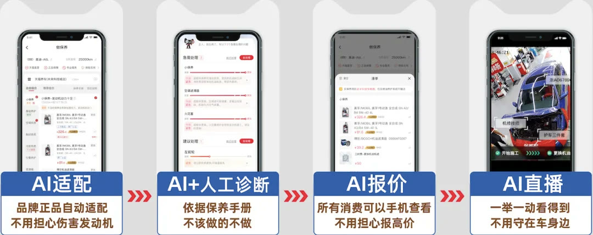
牌就很难模仿。技术层面，背后有阿里云和达摩院 AI 技术加持，能够实现车辆的自动识别、自动追踪、技师动作识别、物体识别、实时推送到车主手机上。不仅能实时看到，视频还能保留30 天，每一辆车进入天猫养车门店意味着运算成本和数据存储成本的增加。但是车主在手机上看到的直播画面就像家里自己安装的摄像头画面一样，硬件价值和技术价值并没有真正的传达给车主。
改善前：车主手机端画面
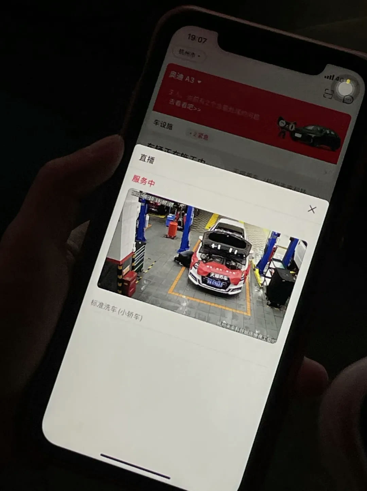
体验是无形的又是可感的，是因人而异的又是可规范的。我们用做产品的方法，将底层技术直接放在产品命名里，重新命名为： AI 直播。“ AI 直播，透明养车”，规范大众的统一认知。在体验产品中，所有的细节都极为重要，我们对该功能提出 2 大改进建议：首先，增加后台才有的 AI 识别框，让车主也能看到 AI 是如何工作的，这是对智慧最直接的表达，建立直观体感。其次，增加保养服务进度条，将 AI 动态识别项目和服务进度结合，设立 4 个关键节点，在车主端完整呈现出从车辆进入工位到保养结束的服务全程，让车主不仅能看见，还能看懂。
改善后：增加动态的 AI 识别框和服务进度条
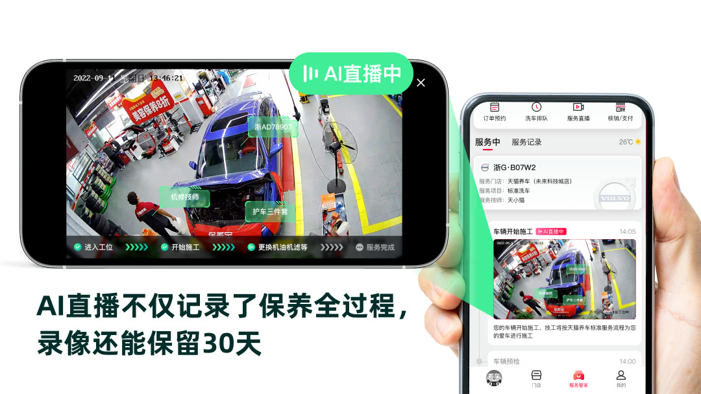
2关键是修辞！一句话打动 B 端顾客和 C 端顾客购买天猫养车独特的经营活动已经创造了独特价值，我们要做的就是把它说出来。再回到文章开头天猫养车找到华与华的核心课题，天猫养车的品牌话语应该是什么？当时天猫养车面临的核心课题是门店规模扩张和盈利，我们需要一句话同时打动 B 端顾客和 C 端顾客。发挥词语的权能，为天猫养车“找魂”，建立“智慧养车”新品类！重新审视“天猫养车”，阿里巴巴引领数个行业的创新，用大数据及智慧化进行重塑，让人们的生活发生质的变化，阿里和天猫母体最大的基因禀赋就是：大数据 智慧化。我们重新定了天猫养车是：天猫智慧养车。发挥天猫母体与生俱来的基因优势，以天猫的知名度+智慧基因禀赋，建立起我们独特的品类价值，同时打破观望和同质对比，唤醒加盟商和中国车主对天猫养车的最大认同。广告语的底层逻辑是修辞学！一句话创建两个世界亚里士多德说：修辞学就是说服人相信任何东西以及促使人行动的语言艺术。具备普通的道理，简单的字词，有节奏的句式或押韵，使人愉悦。天猫养车品牌谚语开创全新品类，实现降维打击：告别传统养车，天猫智慧养车。
运用传播战役中经典的二元论，以“告别”的句式，一笔划开两个世界，一个是传统养车，一个是智慧养车，告别一个旧时代，开启一个新时代！“告别传统养车”同时击中门店和车主的痛点，对传统养车门店发出最后的倒计时，对车主发出邀约。一个广告画面的重大突破，天猫养车的核心产品是门店！在字体设计上，赋予品牌谚语一个强大的母体，扎根在中国人文化中的标语字体，标语字体意味着召唤、指令！
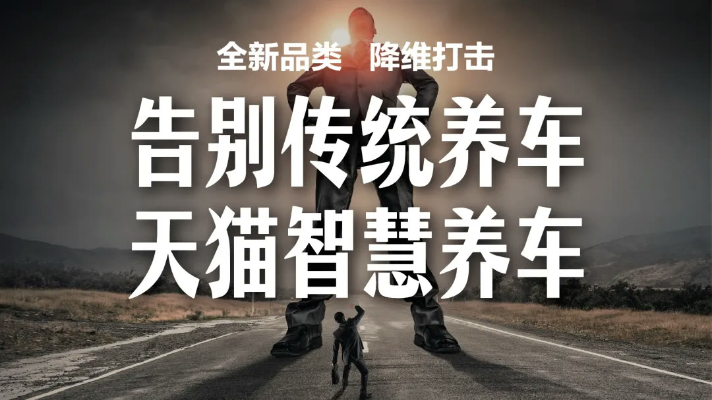
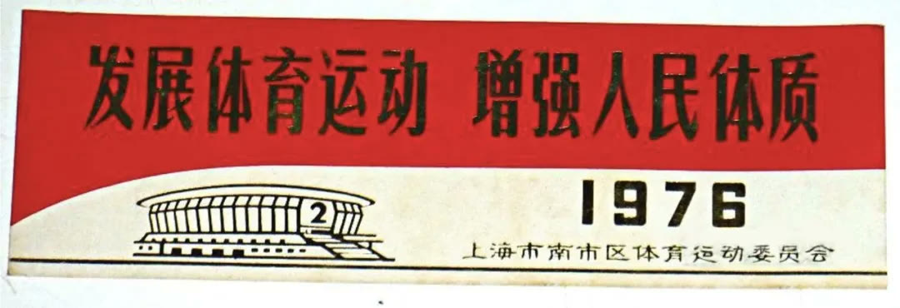
作为有实体门店的连锁品牌，天猫养车对外广告一直重点突出天猫养车品牌名和天猫符号，很多车主都以为是天猫又推出了一个线上 APP ，这是对天猫养车业务最大的误解。因此天猫养车的广告画面我们以门店作为核心产品重点露出，有图有真相， 0 基础沟通，直接告诉公众天猫养车门店长什么样，建立起对天猫养车门店的熟悉感。同时把业务范围（保养、美容、洗车、维修）在广告画面上放大，降低所有人的理解成本和沟通成本。
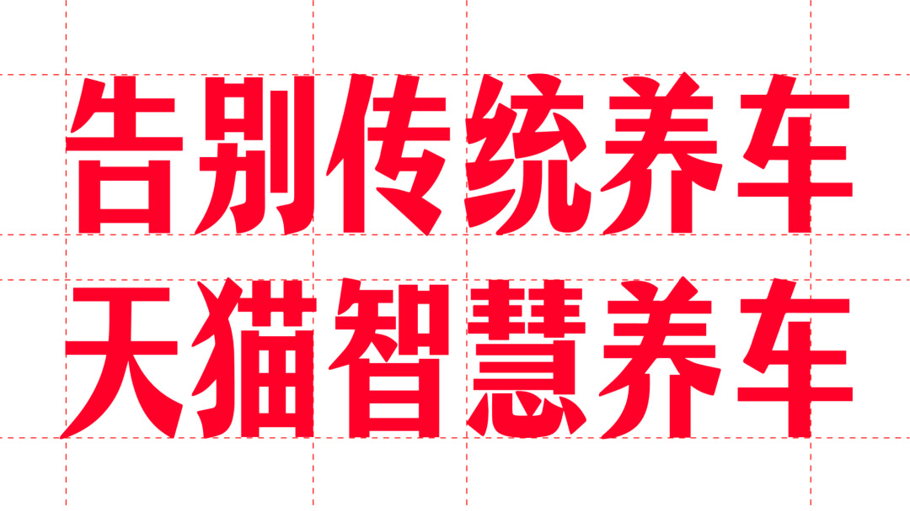
华与华之前：不知道门店长啥样
华与华之后：建立大众对天猫养车门店的熟悉感
全国 12 +高铁站投放
阶段 3
开发养车行业的营销日历
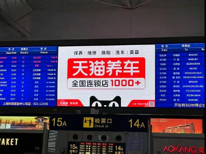
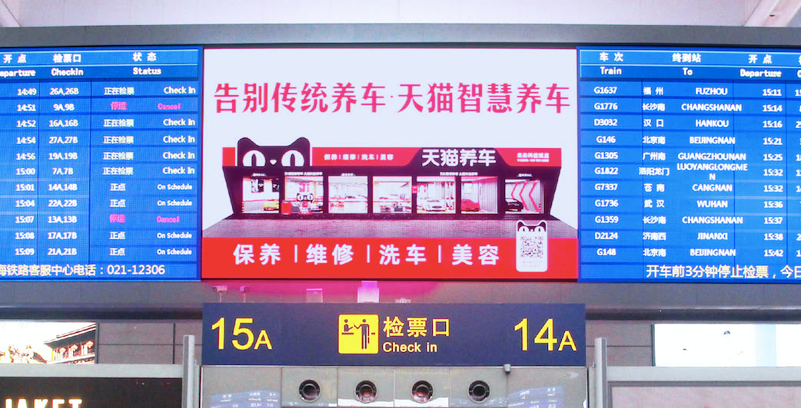
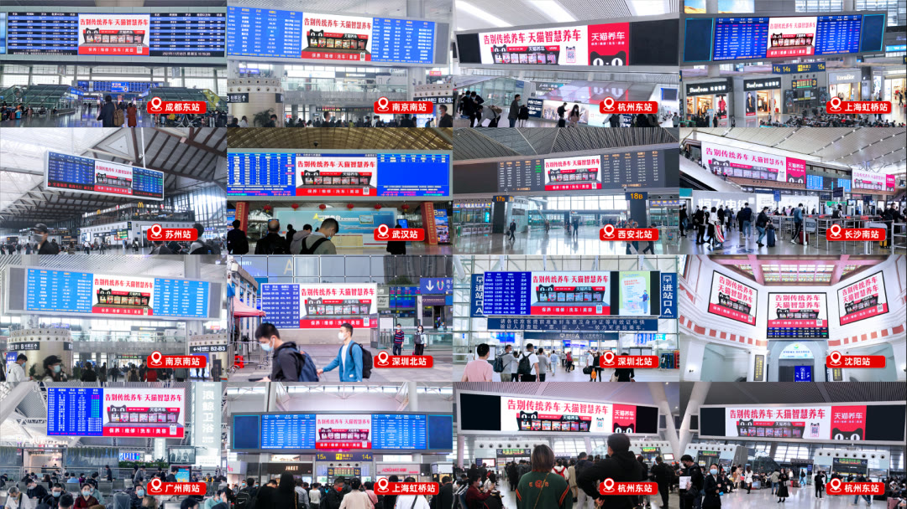
充分发挥咨询公司的跨行业经验成功开发养车行业营销日历标杆充分发挥咨询公司的跨行业经验，是华与华的核心能力传统养车连锁门店做活动就是打折、促销和卖卡，极容易被模仿，消费者在不了解服务的情况下，只能陷入比价的思维，最后只能越卖越便宜。华与华的资源禀赋之一是掌握快消、餐饮、药品等跨行业的经验，在其他行业司空见惯的做法，在另一个行业就是制胜的关键，实现降维打击。天猫养车小红鼻营销日历就是导入快消的跨行业经验，通过信息对称实现品牌溢价、正向经营的标杆案例。 2022 年春季在多城市门店停摆情况下，小红鼻营销日历依然超额完成销售目标，销售额增长 125 %，供应链毛利增长 77 %。痛点营销，为天猫养车创意超级符号小红鼻，完成跟车主对暗号小红鼻营销日历是在夏季来临开空调之前销售车内空调清洗服务，主要是空调蒸发箱清洗，蒸发箱是藏在车内的空调部件，平时看不到，但却是空调系统中藏污纳垢的地方，容易发霉、滋生细菌，决定着车内空气质量。通过对汽车空调原理及产品科学的了解，项目组重新设计空调蒸发箱项目的购买理由：车子空调脏，关键脏在蒸发箱。
· 以超级句式，“关键脏在”实现强调和聚焦，引发车主注意、唤醒需求；· 实现信息对称，普及 90 %车主不知道的养车知识；
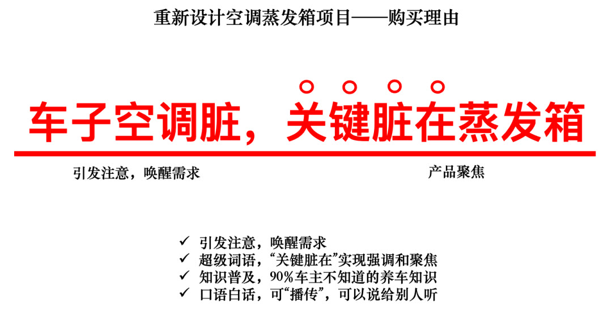
· 口语白话，可“播传”，可以说给别人听。车内空气不好，怎么跟车主沟通？将抽象的感受具像化，这是一大难题！项目组认为：养车店就是汽车的医院，我们要像卖药品一样卖服务。通过症状跟车主对暗号，用症状唤醒需求！我们将空气不好的体感从轻到重排序，鼻子开始闻到异味时，还处在轻度污染，如果你坐车头晕、鼻敏感甚至打喷嚏，污染程度就比较严重了。这时就能明显的发现：车内空气不好，鼻子首当其冲，嗅觉反馈是来自身体的原始警告。
营销日历的超级符号，把鼻子不舒服用红色球代表症状，创作超级符号“小红鼻”，并放在一个哭泣的小姑娘的鼻子上，设计警示性海报，放大刺激信号的能量，完成跟主要消费群体“家庭客户”对暗号。
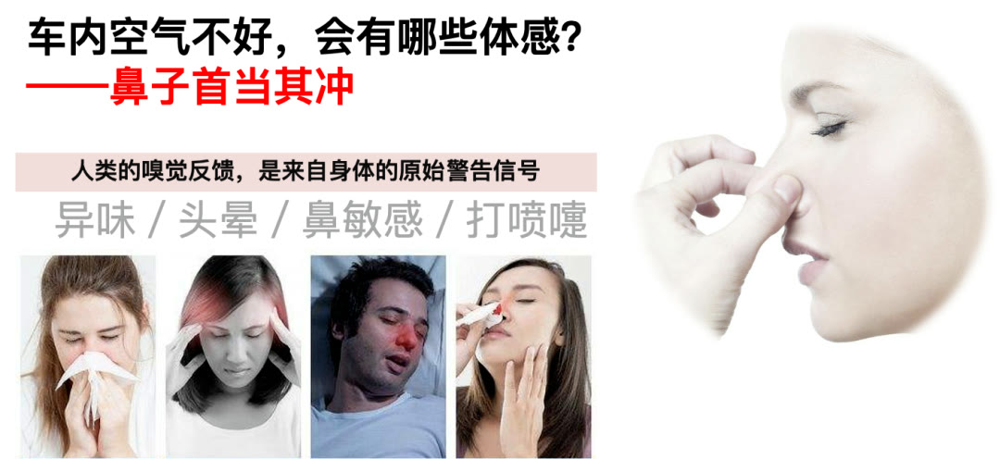
华与华前：卖打折套餐（左边）；华与华后：痛点营销对暗号（右边）
为天猫养车导入快消行业打堆头的经验，实现降维打击！作为重要的春季营销日历，门店是销售主阵地，常见的陈列方式是产品陈列，把清洗产品摆的花样百出，但是不解决问题，车主还是不知道这个是啥，有什么效果！
项目组导入快消行业的经验——打堆头，堆头是华与华在快消行业常用的营销道具，在堆头上可以提供丰富的购买指令和购买指南，实现信息对称，降低消费者的决策成本。在小红鼻的堆头设计上，我们首先明确了一个重要原则：摒弃行业常见的产品陈列方式，要道具陈列，不要产品陈列，要让车主一目了然的能看见效果，提供清晰的购买理由、购买指令、购买指南：
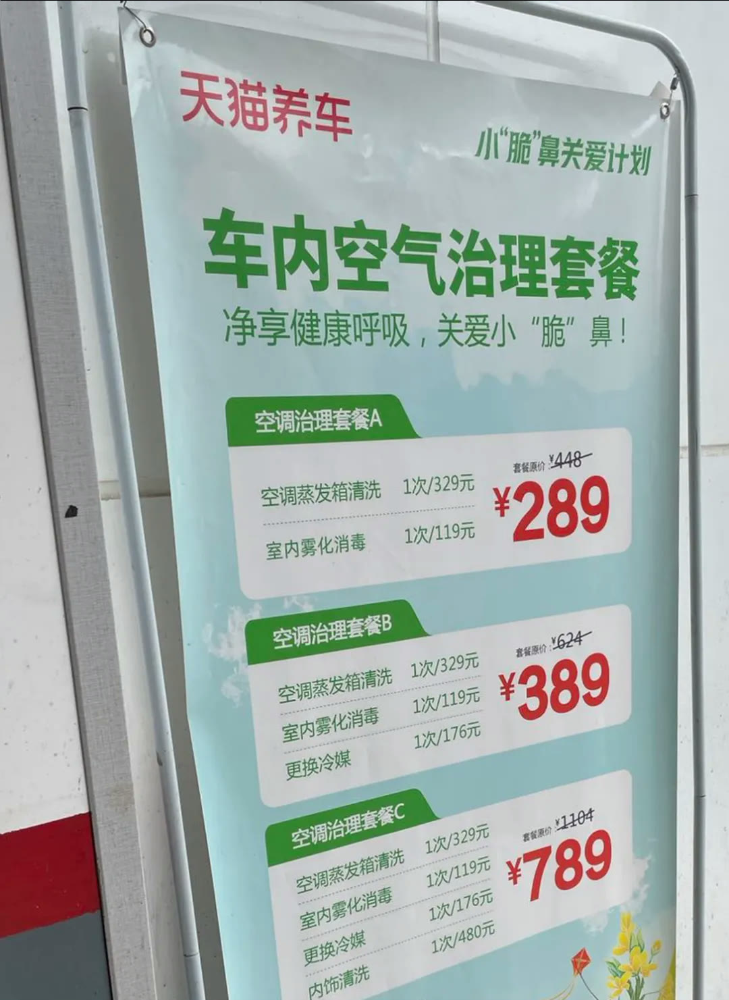
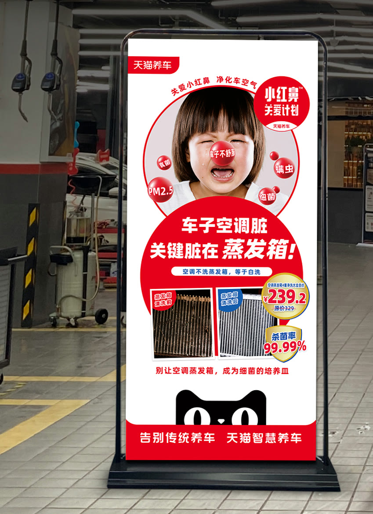
在门店进行打样测试时，项目组同学刚布置完堆头，就有车主凑上来询问并成功购买，变被动销售为主动了解购买。
- 汽车部件实物对比：很多车主不知道有蒸发箱，更不会知道蒸发箱会有多脏，我们就真实陈列一个蒸发箱旧件，让霉斑、灰尘眼见为实。
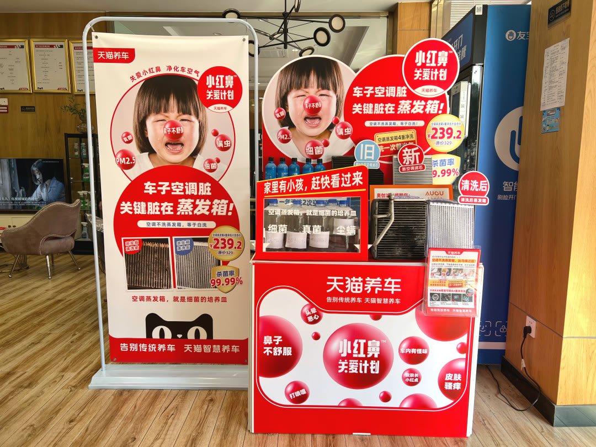
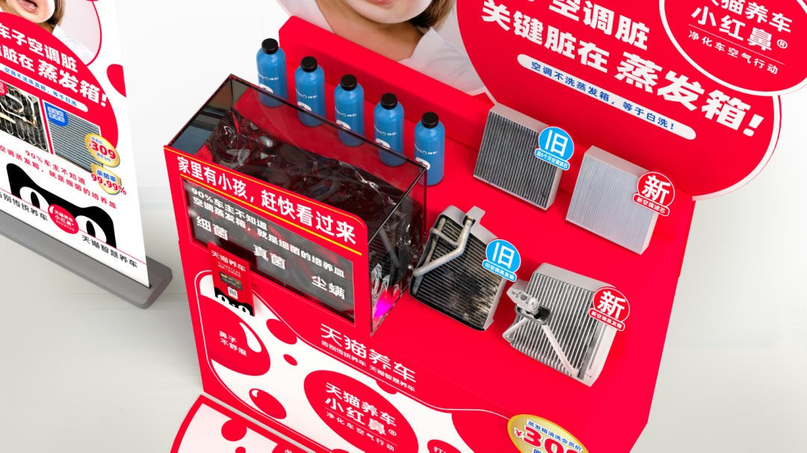
- 清洗效果真实陈列——蒸发箱清洗快消品陈列：蒸发箱清洗是在引擎舱密闭的环境中进行，一般在副驾驶腿部的位置，车主很难看到清洗过程，效果也很难感知。门店走访的过程中我们发现，聪明的门店会把清洗的脏水收集起来，洗出来的脏水各种杂质清晰可见，这种杂质是不会沉淀的，一直悬浮在水中，并标上具体车牌号集中展示。项目组学习快消品陈列的方式，用大号脏水缸或水瓶进行集中展示，放大刺激信号，并标明各种杂质的信息：细菌、真菌、尘螨——空调蒸发箱就是细菌培养皿，并发出购买指令：家里有小孩，赶快看过来！
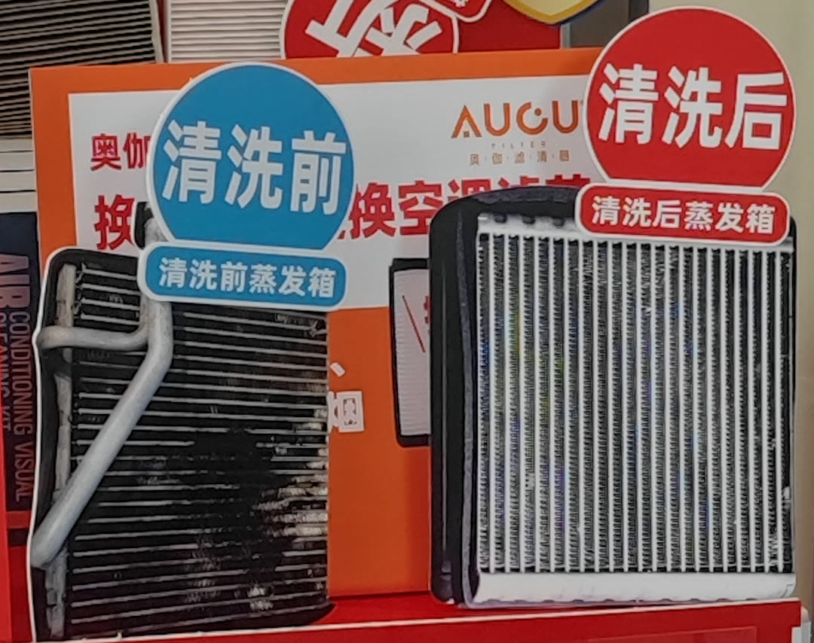
- 购买指南——提供价格及理化数据证明。除了触目惊心的脏水刺激，为车主提供临门一脚的价格信息和清洗效果的理化数据“杀菌率 99 . 9 %”，完成购买。小红鼻项目是华与华为天猫养车创作的第一个营销日历，通过导入跨行业经验，一经推出即为行业标杆，赢得重要加盟商盛赞：“小红鼻这个项目，我认为是整个汽车行业有史以来最成功的一个项目，未来我们的核心项目能不能都这么包装？”
4建立组织生活共同体和文化共同体，实现共生共赢华与华的渠道观：渠道不仅是分销体系，更是一个组织生活共同体渠道是什么？渠道不仅是一个分销体系和利益共同体，更是企业“体制外，结构内”的组织共同体，是相互依存，共同发展的组织统一体，是人的组织统一体，属于组织行为学的范畴，要有成员，有领导、有层级、有制度、有激励、有奖惩、有目标，有组织生活，有仪式。
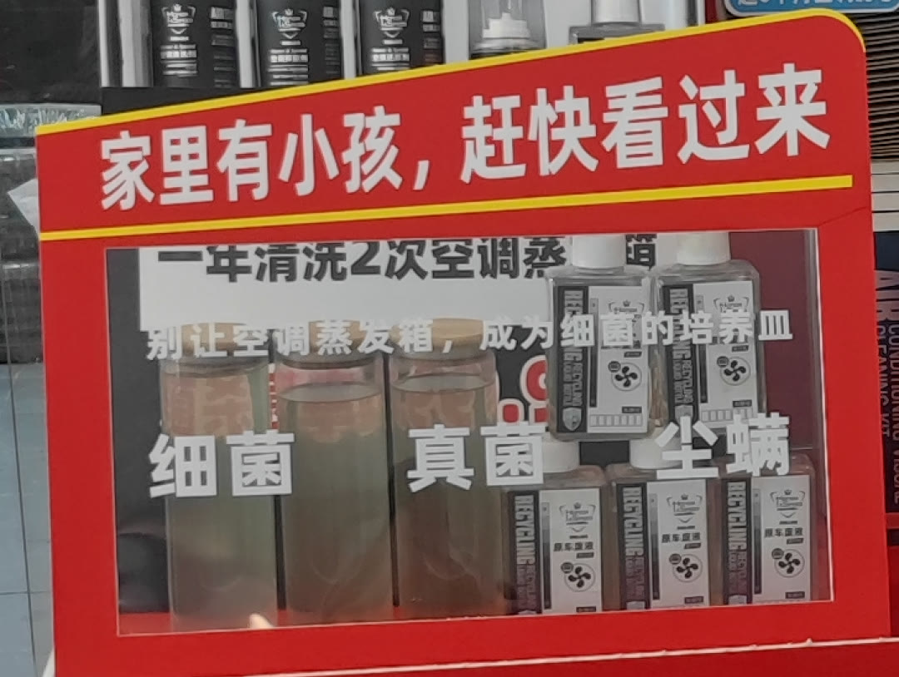
天猫养车处在快速发展期，门店规模突破 1800 +家，要求企业必须搭建好组织能力，降低内部交易成本，通过对天猫养车经营活动的梳理，华与华提出天猫养车在运营督导、人才培养、组织生活上需要强化，为天猫养车的快速发展打下坚实的组织基础。华与华“3板斧”，构建天猫养车加盟商组织生活共同体运营督导：不要结果导向，要因果导向，为天猫养车导入过程管理，做到习惯共同体。天猫养车全国门店规模的快速扩张，不得不面临一个现实，就是门店分散，后期运营维护、门店管理跟不上。运营教练是链接品牌和门店的关键环节，华与华首次将快消行业的渠道管理经验移植到加盟连锁行业，将过程管理纳入运营教练的绩效考核，将总部运营要求拆解成可量化的具体指标，真正落地到门店，形成全国门店的习惯共同体。人才培养：企业是经营知识的机构，核心抓店长成长培养，做到知识共同体。华与华强调所有行业的企业都是咨询业，企业是经营知识的机构，是为人类创造新知识的前沿，每个企业都要成为这个领域的首席知识官，首席发言人和首席答疑人。对外是，对内更是，人是公司发展的第一目的。天猫养车在开始之初就搭建了完备的技师培训及认证体系，具备完整的技师职业成长晋升体系。但是在门店经营能力上需要强化系统的培训，我们在门店走访的过程中发现，这是门店十分迫切的需求。店长是门店管理的核心枢纽，我们提出核心抓店长的持续培养，启动《天猫养车店长成长班》，并成立“天猫养车学院”，天猫养车成立专业团队研发并设计有体系的店长成长
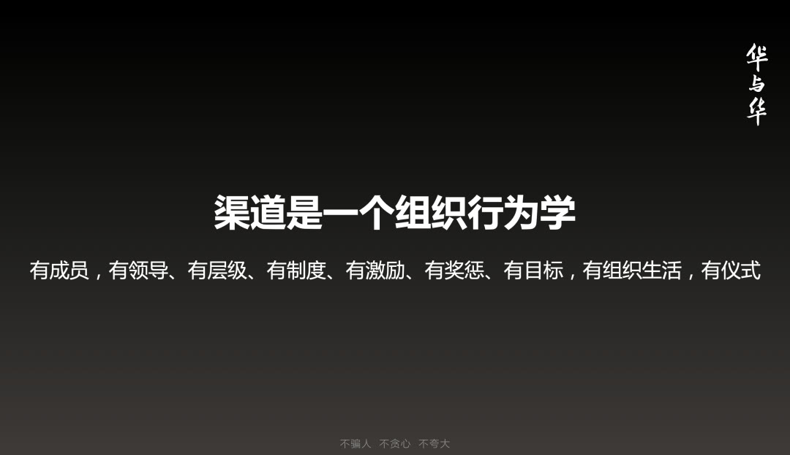
课程，帮助加盟商培养综合型的管理型人才，减轻加盟商管理负担，尤其是多店加盟的加盟商。2022 年 11 月 14 日天猫养车“店长成长班”正式开营，来自全国的 100 多位店长参加首届课程，以课堂培训与实战演练的方式，帮助门店经营者从技术型、服务性人才向综合管理型人才转型。
天猫养车首届“超级店长班”培训现场
天猫养车首期“门店经营特训营”
组织生活：贯彻加盟商管理日历，用线下加盟商大会，建立起组织生活的共同节拍。天猫养车先天的互联网基因，更习惯于线上跟加盟商沟通，线上培训、线上开会、线上宣贯。为此华与华提出 4 个坚持：天猫养车加盟商大会一定要坚持年年办；坚持同一时间办；坚持线下办；坚持见面办。
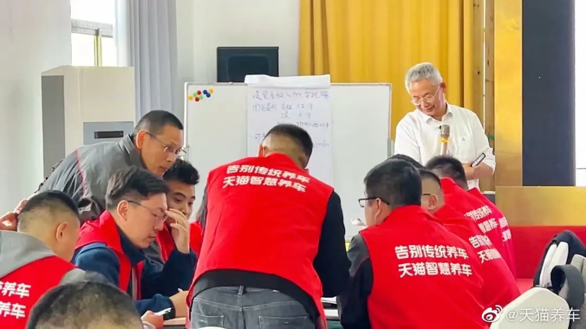
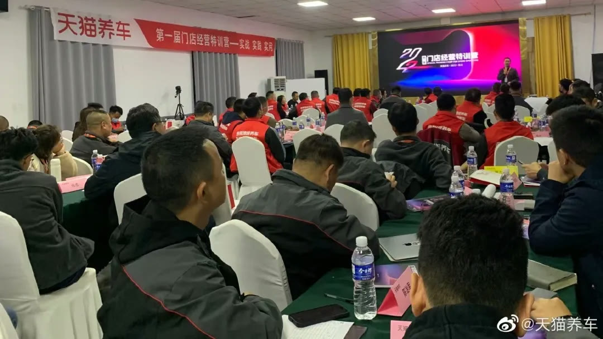
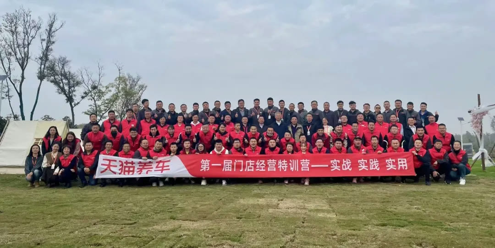
通过一年一度的加盟商大会，实现组织战略的一致性、思想的一致性和行动的一致性，建立天猫养车组织生活节拍的关键动作，这既是组织生活也是管理行为。
第一届加盟商大会新康众 COO 李逸先生发布品牌战略
华与华董事长华杉先生主题演讲
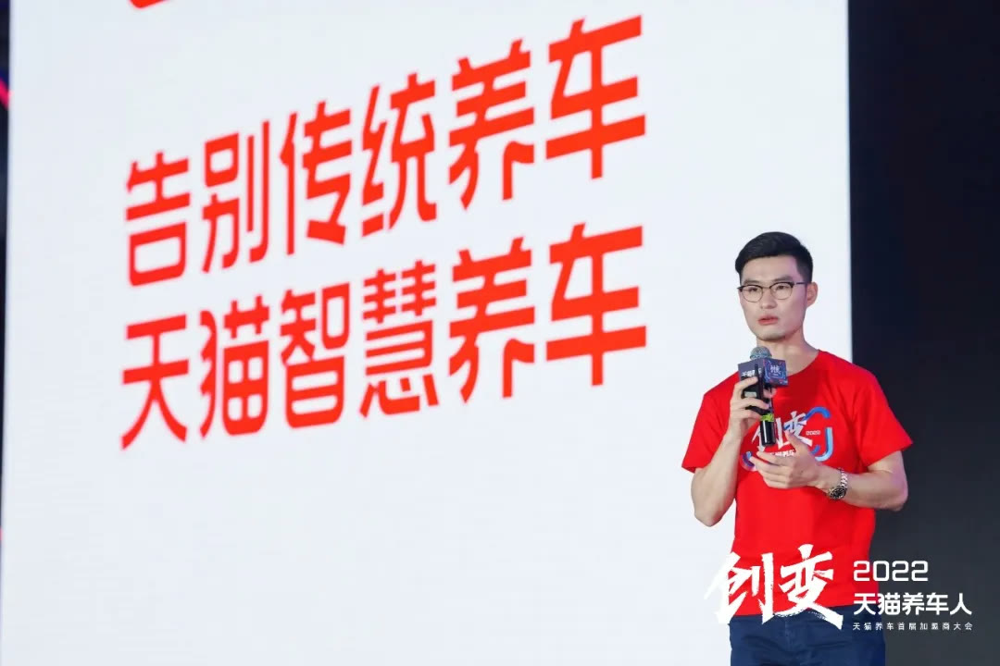
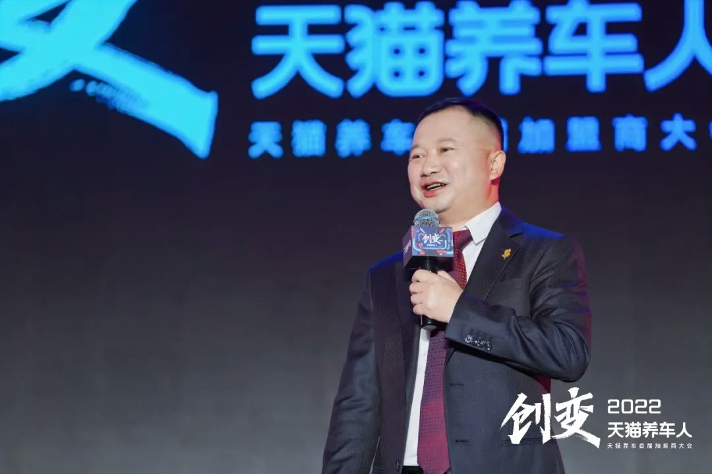
发布天猫智慧养车门店产品战略及终极想象
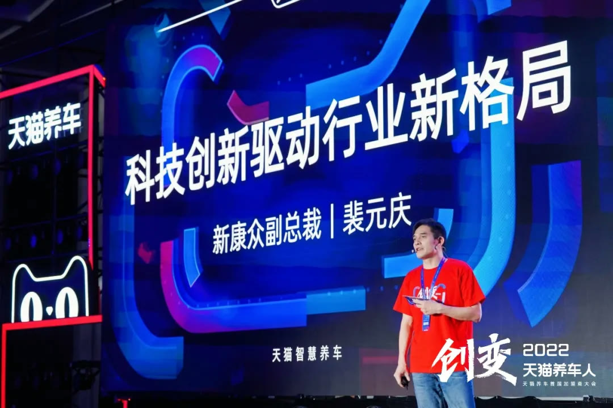
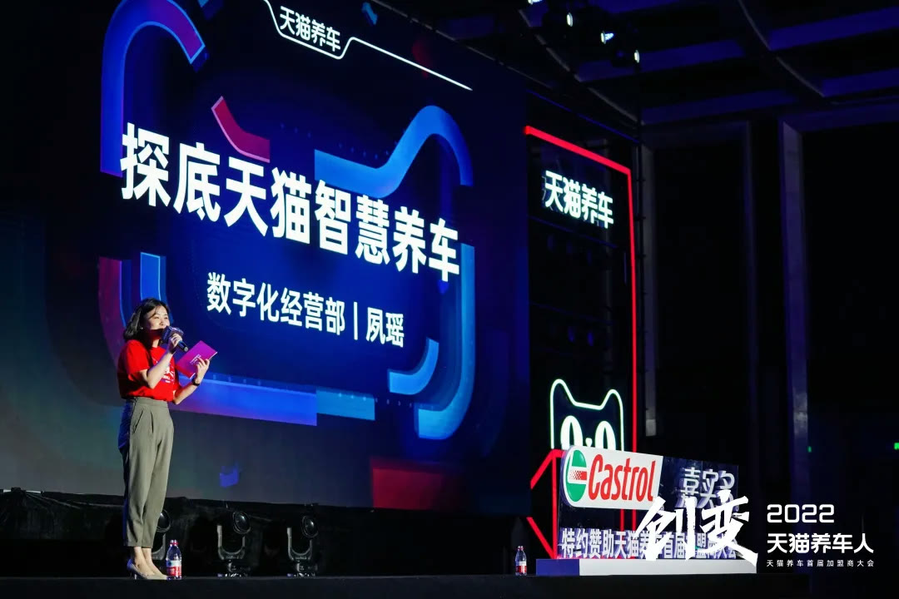
天猫养车门店升级，发布全套门店元媒体系统，在会场 1 : 1 还原
加盟商现场订购小红鼻热卖堆头
本文总结所有的胜利都是价值观的胜利！天猫养车是华与华践行营销价值观的标杆案例，始终紧扣“社会问题等于企业社会责任”的战略意图，更深一步将企业社会责任深化到产业价值层面，通过智慧能力赋能整个产业链发展！
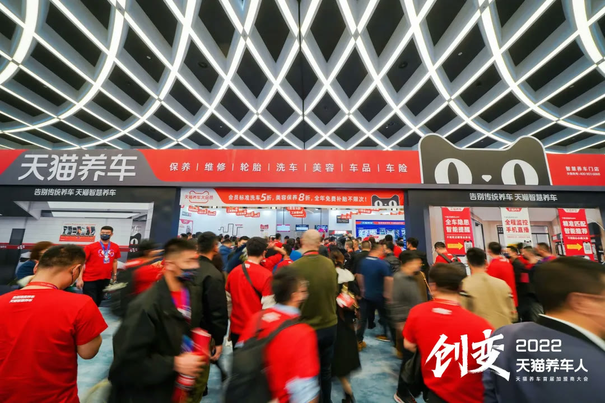
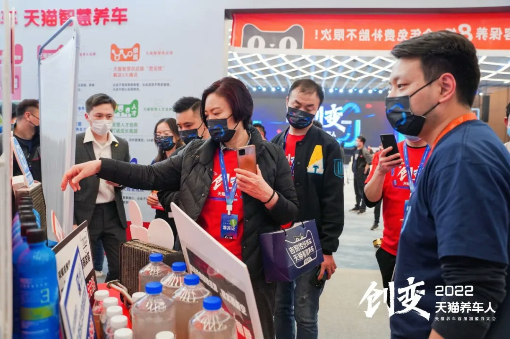
- 创意改变命运，一句品牌谚语直击中国养车行业痛点，引领中国养车市场进入智慧时代！成功打动 B 端、 C 端两类顾客，为战略定心，为品牌定型！
- 充分发挥咨询公司的跨行业经验，所有的行业都值得用快消品的方式重新做一遍，为传统养车行业引入快消的产品开发和推广经验，成为中国养车行业标杆之作。
- 华与华的渠道观：渠道不只是一个分销体系，也不仅是一个利益共同体，关键还是一个组织生活共同体。发挥华与华对渠道的本质认识，对天猫养车渠道发展提出关键决策和对策，为天猫养车的快速发展保驾护航，真正践行华与华让企业少走弯路的经营使命！